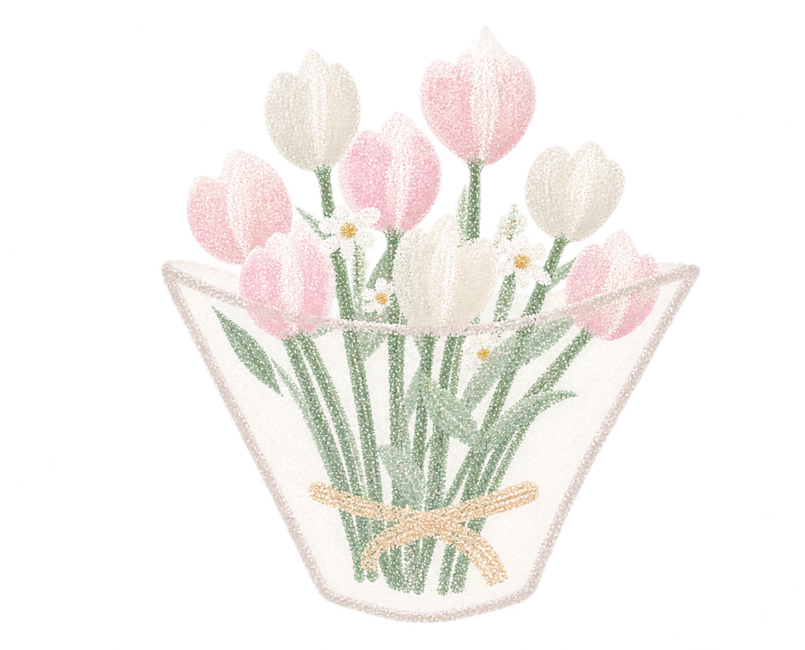

AFTER THE SHOT · 06
关于篮球
你对篮球的热爱与Passion让人感动，也反过来影响我，让我思考我真正热爱的是什么。
祝接下来的比赛一切顺利，希望你可以享受舞台上的每一分钟。
喜欢就前进，太累了就停下来。
你为什么不排序！我都不知道你更喜欢谁，我就默认詹姆斯的6号球衣了。原本布克和东契奇的球衣更好看的。
还有反转！我最开始找WNBA的球衣没有找到合适的，然后在地铁上看订单情况时发现了Sabrina的球衣，果断把6号老詹给退了哈哈哈哈。希望你喜欢这件衣服，带着热爱继续前进吧！

01 / COURTSIDE LIGHT
穿上你的球衣
AFTER THE SHOT · 06
你对篮球的热爱与Passion让人感动，也反过来影响我，让我思考我真正热爱的是什么。
祝接下来的比赛一切顺利，希望你可以享受舞台上的每一分钟。
喜欢就前进，太累了就停下来。
你为什么不排序！我都不知道你更喜欢谁，我就默认詹姆斯的6号球衣了。原本布克和东契奇的球衣更好看的。
还有反转！我最开始找WNBA的球衣没有找到合适的，然后在地铁上看订单情况时发现了Sabrina的球衣，果断把6号老詹给退了哈哈哈哈。希望你喜欢这件衣服，带着热爱继续前进吧！
02 / ANAN ONLINE
这是安安的数字分身，虽然离家很远，但是你可以在这里摸一摸他
摸一摸安安
03 / A NEW YEAR
01 有舒骚的比赛
02 有想去就去的地方
03 有很多粘你的小猫
04 有称心如意的选择
05 有低落时的情绪出口
希望你更自在地做自己。
04 / ONE LAST THING
最后一站
写于30日 · 机场
亲爱的1man：
生日快乐，李伟曼！恭喜你成为一个老奶了！
我很久没有写信了，心有千言，然寥寥几笔难以成行。坐在30日机场的座椅上，我写下这段文字，希望给你新的一岁送去祝福，给你的回忆装点一小撮美好。
谢谢你的热情款待，让我在上海留下了很棒的回忆，和你在一起的每一天都很美好。我记住了新所里书店门口的蝴蝶，记住了北外滩前的高楼林立，记住了你们学校里的异瞳白猫，我还记住了欢乐谷里让人腰疼的疯狂精灵和带蓝色帽子的社恐女孩。离开的时候还是有一点舍不得。不过上海真的好漂亮哇！它的活力与先进着实让人向往，看似排外实则包罗万象，置身其中便有一种天地广阔大展身手的渴望。想来还是有一点点淡淡的遗憾>-<。
谢谢你在我低落时听我倒苦水，听我讲各种各样奇奇怪怪的感悟，然后认真地给我回复。你总是耐心又温柔，勇敢又坚韧。我从你的身上学到了很多东西。你的真诚，你的分寸，你的耐心，还有许多珍贵的品质。你的魅力如同桂花的香气，温柔地飘散在周身。当然，这些都是你，或许也不是你。也希望你以后可以更自在地展现真实的自己。无论开心还是烦恼，如果想要聊一聊，我随时欢迎，就像你对我的那样。
希望你在新的一岁仍葆有心气与热爱，想要的就去大胆争取，享受在舞台上的每一刻。
正在做星期五的—— 星期五